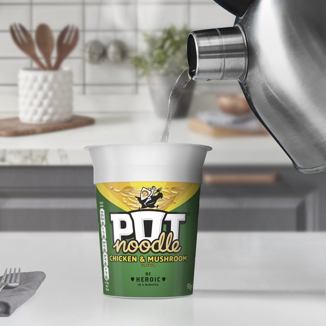

Chicken and Wild Mushroom Ramen

Description
Egg noodles par-boiled (for 4 minutes)in a creamy chicken and mushroom broth.
Ingredients
Steps
- Partially remove the foil lid before adding boiling water to the fill line.
- Reseal the foil lid and let sit for 4 minutes.
- Grab your fork and enjoy.
Return to Homepage